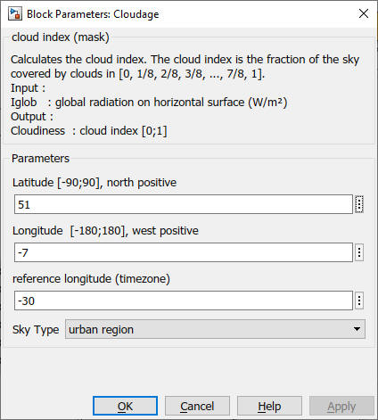

Cloudage
Path: CARNOT/Basic/Weather
Purpose:
Calculates the cloudage fraction.
Description:
The index of cloud is calculated by comparison of the actual radiation with the
calculated radiation of a very clear day. For this radiation it is very
important, to choose the right SkyType. During the night, when there is no
radiation, the cloud index is linear interpolated.
This block is also available as workspace function
cloudindex. You may also type
help cloudindex
on the command line for more information.
Input:
| Iglob | : | global radiation on horizontal surface in (W/m2) |
Output:
| cloudage | : | cloud index in 0..1 |
Parameters and Dialog Box:

Examples:
Open the example explorer from the Matlab command window
ExampleBrowser
or load the examples via the CARNOT library.
Literature:
Duffie, J., Beckman, W.:
Solar Engineering of thermal processes, John Wiley & Sons, Inc. 1991
Characteristics:
| Direct Feedthrough | : | Yes |
| Sample Time | : | Inherited from driving block |
| Vectorized | : | No |